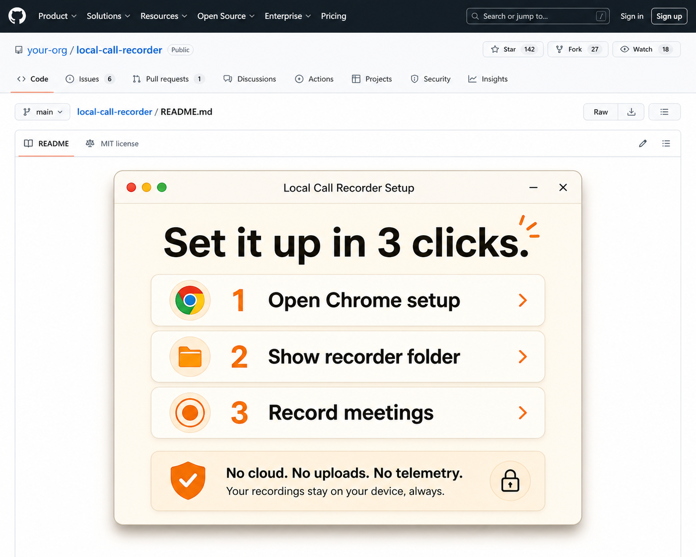
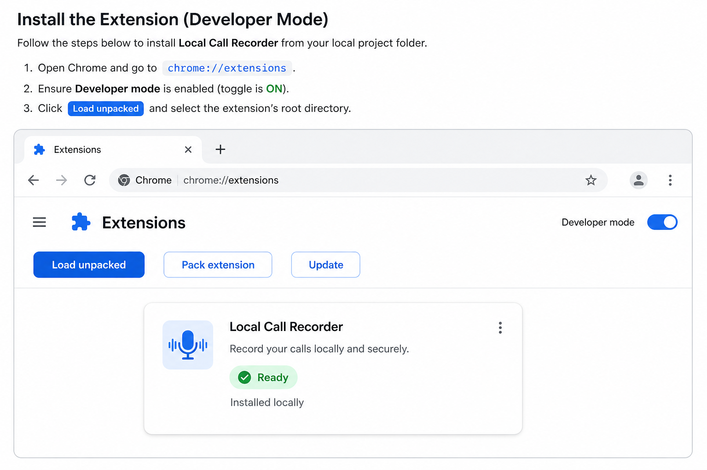

Open the recorder
Double-click the Mac or Windows download. No developer tools, no GitHub, no Terminal.
Local-only call recording
Pick your computer. Download the desktop recorder. Open it, press Start, then Stop + Save. Your recordings stay on your device.
Unsigned pilot builds: macOS Gatekeeper and Windows SmartScreen warnings are expected until production signing is added.
Double-click the Mac or Windows download. No developer tools, no GitHub, no Terminal.
The desktop app has one obvious recording button.
When the call ends, click Stop + Save. The video stays local.
Future public release
Chrome blocks websites and normal installers from silently adding extensions. That protects users. Once this extension is published in the Chrome Web Store, this button becomes the simplest browser-only install path.

